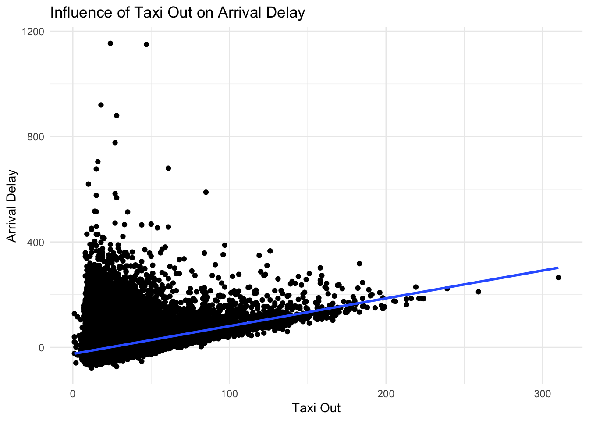
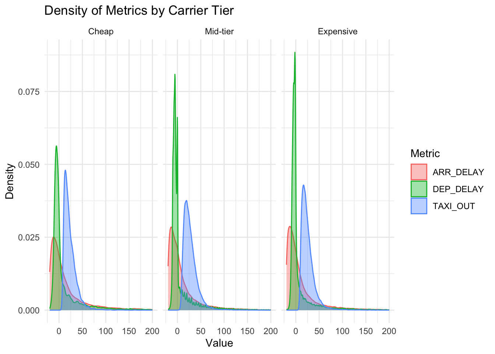
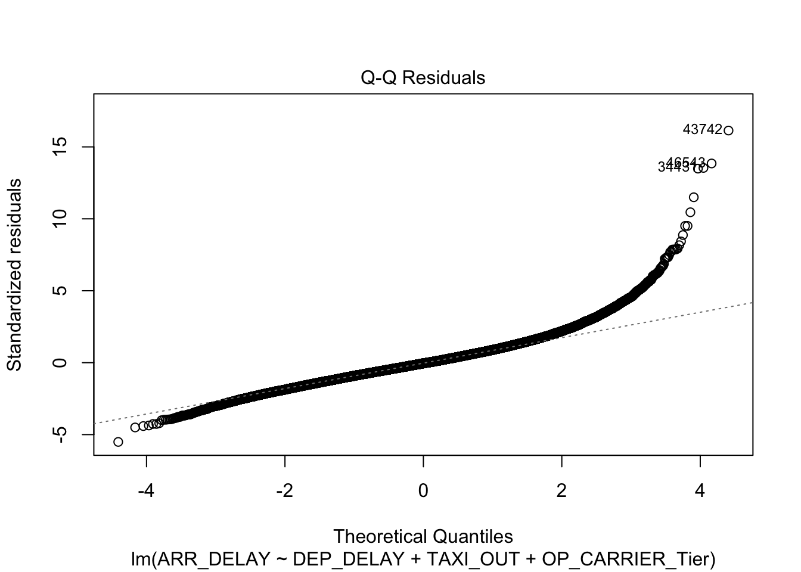
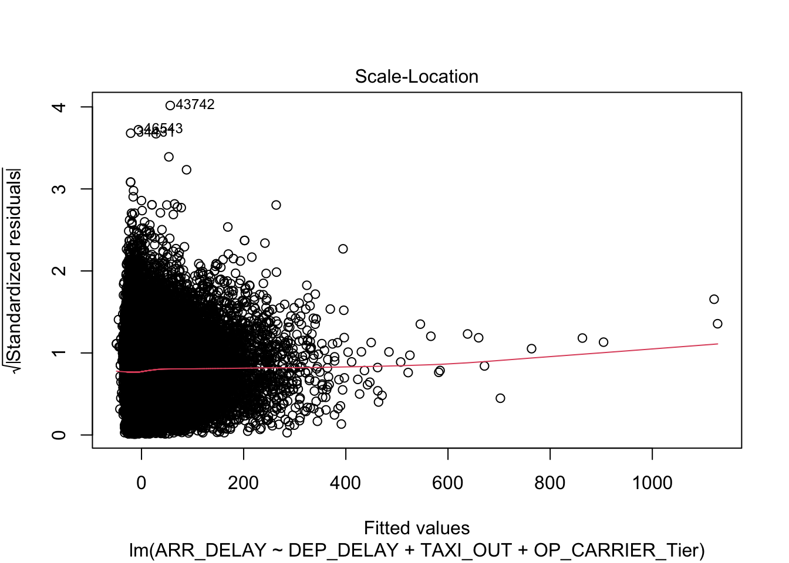
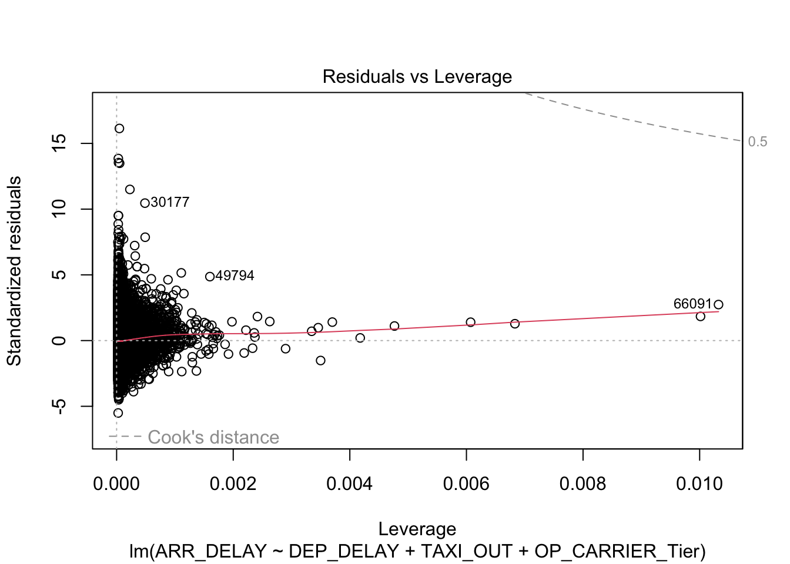
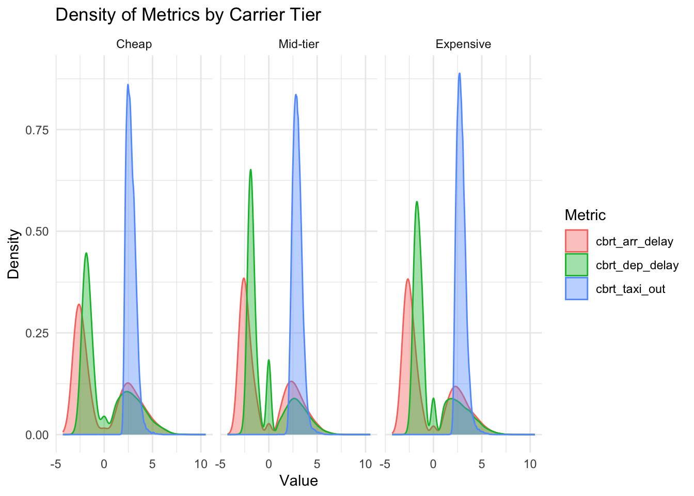

If we look at the planned departure times, we see that the first flight is at 5:35 am and the last flight is at 10:39 pm. This departure times are explain by a seasonal curfew between the hours of 12 am and 6 am during the warm months (Source: Wikipedia).
Show the code
planes %>%ggplot(aes(x = CRS_DEP_TIME, y = DEP_TIME)) +geom_point() +theme_minimal()
This plot shows the planned departure time on the x axis and the actual departure time an the y axis. Points on the diagonal departed on time. On the bottom right of the plot we see a few cases of flights that have a delay and depart on the next day early morning. This should be considered when using DEP_TIME in a statistical model. Since flights before 5 am are systematic different from flights after 5 am since these flights were planned to depart the day before.
Arrival Delay are similar across the weekdays and season. The violin plot give us a feeling of how skewed arrival delay is and how different the median and average are. Other variables in this data set are similarly skewed, therefore modeling the average may not represent the biggest part of the data. We will later see if we can handle this skewness.
Show the code
planes %>% dplyr::select(DEP_DELAY,ARR_DELAY,CRS_DEP_TIME,WHEELS_OFF,WHEELS_ON, DISTANCE,ACTUAL_ELAPSED_TIME, TAXI_OUT, TAXI_IN ) %>%cor(use ="complete.obs") %>%kable(caption ="Correlation matrix of different variables")
Correlation matrix of different variables
DEP_DELAY
ARR_DELAY
CRS_DEP_TIME
WHEELS_OFF
WHEELS_ON
DISTANCE
ACTUAL_ELAPSED_TIME
TAXI_OUT
TAXI_IN
DEP_DELAY
1.0000000
0.8879422
0.1780300
0.2329716
0.0879676
0.0530508
0.0608624
0.0540390
-0.0049062
ARR_DELAY
0.8879422
1.0000000
0.1449869
0.2149834
0.0900263
0.0343948
0.1903733
0.4001428
0.0866103
CRS_DEP_TIME
0.1780300
0.1449869
1.0000000
0.9710676
0.8135008
-0.0707239
-0.0456351
0.1120957
-0.0622022
WHEELS_OFF
0.2329716
0.2149834
0.9710676
1.0000000
0.8279598
-0.0603341
-0.0160242
0.1730932
-0.0561931
WHEELS_ON
0.0879676
0.0900263
0.8135008
0.8279598
1.0000000
0.0066490
0.0596126
0.1755272
-0.0181294
DISTANCE
0.0530508
0.0343948
-0.0707239
-0.0603341
0.0066490
1.0000000
0.9298512
-0.0095594
0.1186520
ACTUAL_ELAPSED_TIME
0.0608624
0.1903733
-0.0456351
-0.0160242
0.0596126
0.9298512
1.0000000
0.2885034
0.2081655
TAXI_OUT
0.0540390
0.4001428
0.1120957
0.1730932
0.1755272
-0.0095594
0.2885034
1.0000000
-0.0091804
TAXI_IN
-0.0049062
0.0866103
-0.0622022
-0.0561931
-0.0181294
0.1186520
0.2081655
-0.0091804
1.0000000
This correlation plot helps us understand the relationship and colinearity among the potential variables used in our models. Some variables are time based (for example: CRS_DEP_TIM, WHEELS_OFF) with small differences, making them nearly perfect correlated. Such variables shouldn’t be included in the model together as they make the coefficients unstable. Other than that interesting potential predictors can be assessed from this correlation matrix.
Linear Model
Aim: - Investigating the factors contributing to delays in arrival.
Show the code
planes %>%ggplot(aes(x = DEP_DELAY, y = ARR_DELAY)) +geom_point() +geom_smooth(method ="lm") +theme_minimal() +labs(title="Influence of Depature Delay on Arrival Delay",x ="Departure Delay",y ="Arrival Delay") planes %>%ggplot(aes(x = TAXI_OUT, y = ARR_DELAY)) +geom_point() +geom_smooth(method ="lm") +theme_minimal() +labs(title ="Influence of Taxi Out on Arrival Delay",x ="Taxi Out",y ="Arrival Delay")

From the plots above we see that both DEP_DELAY and TAXI_OUT are positively correlated with ARR_DELAY. It’s obvious that a delay in departure leads to a delay in arrival. Furthermore, the skeweness is again visiable in the plot. ## Modelling
We use drop1 function, since OP_CARRIER has more than two levels. The addition of the OP_CARRIER variable significantly improves the model fit.
It could be more interesting to group the different OP_CARRIER into three categories of Cheap, Mid-tier and expensive airlines. For this we use chatGPT. Having three categories instead of 14 will help us to reduce the complexity of the model and make it easier to interpret and compare different levels of airlines. Especially, since some airlines how low flight counts. Of course these categories may not be complete true for each case. As ChatGPT mentions some airlines blur the categories as they could be considered cheap and or mid-tier and so on.
With including the OP_CARRIER_Tier variable we lose the individual information of each airline. Still, this is done because adding OP_CARRIER_Tier and OP_CARRIER would properly lead to rank-deficiency.
lm.arrival.4<-update(lm.arrival.3, . ~ . -OP_CARRIER+ OP_CARRIER_Tier)drop1(lm.arrival.4, test ="F")
Simultaneous Tests for General Linear Hypotheses
Multiple Comparisons of Means: Tukey Contrasts
Fit: lm(formula = ARR_DELAY ~ DEP_DELAY + TAXI_OUT + OP_CARRIER_Tier,
data = planes)
Linear Hypotheses:
Estimate Std. Error t value Pr(>|t|)
Mid-tier - Cheap == 0 -2.89168 0.13077 -22.112 <0.0000000001 ***
Expensive - Cheap == 0 -3.54434 0.13219 -26.813 <0.0000000001 ***
Expensive - Mid-tier == 0 -0.65267 0.08342 -7.824 <0.0000000001 ***
---
Signif. codes: 0 '***' 0.001 '**' 0.01 '*' 0.05 '.' 0.1 ' ' 1
(Adjusted p values reported -- single-step method)
We find strong evidence that all three pairwise differences are not equal to zero. Lets plot the differences:
Show the code
par(mar =c(5.1,7.5,4.1,2.1))plot(ph.test.THSD)
This plots shows us that the the difference between airline tiers is not zero in any case. Furthermore, the differences follow the possible intuition that cheaper flights are more likely to be delayed than mid-tier and expensive flights.
Interpretation of final model
Coefficients of Model
summary(lm.arrival.4)
Call:
lm(formula = ARR_DELAY ~ DEP_DELAY + TAXI_OUT + OP_CARRIER_Tier,
data = planes)
Residuals:
Min 1Q Median 3Q Max
-66.813 -7.610 -0.579 6.856 195.722
Coefficients:
Estimate Std. Error t value Pr(>|t|)
(Intercept) -26.858032 0.131610 -204.07 <0.0000000000000002 ***
DEP_DELAY 0.976010 0.001071 911.29 <0.0000000000000002 ***
TAXI_OUT 0.934567 0.002517 371.28 <0.0000000000000002 ***
OP_CARRIER_TierMid-tier -2.891678 0.130774 -22.11 <0.0000000000000002 ***
OP_CARRIER_TierExpensive -3.544343 0.132189 -26.81 <0.0000000000000002 ***
---
Signif. codes: 0 '***' 0.001 '**' 0.01 '*' 0.05 '.' 0.1 ' ' 1
Residual standard error: 12.13 on 96064 degrees of freedom
(4265 observations deleted due to missingness)
Multiple R-squared: 0.9135, Adjusted R-squared: 0.9135
F-statistic: 2.535e+05 on 4 and 96064 DF, p-value: < 0.00000000000000022
DEP_DEALY: given all predictors in the model are kept constant, a 1 minute increase in DEP_DELAY leads to an increase in ARR_DELAY of 0.976 minutes on average.
TAXI_OUT: given all predictors in the model are kept constant, a 1 minute increase in TAXI_OUT leads to an increase in ARR_DELAY of 0.935 minutes on average.
Intercept: With DEP_DELAY and TAXI_OUT being 0, the average ARR_DELAY of Cheap Airlines is -26.858. Meaning that on average these flights arrival 27 min early. While a departure delay of zero is realistic and in range of our data, the taxi out time of zero is not realistic. With min of taxi out being 1. We could center TAXI_OUT so that zero represents the average taxi out time.
TierMid-tier: On average Mid-tier airlines arrive 2.892 minutes earlier compared to cheap airlines.
TierExpensive: On average Expensive airlines arrive 3.544 minutes earlier compared to cheap airlines.
These boxplots show the skewedness of the variables. Outliers may play a big role in the model and could drive differences in the averages. Since these outliers are not measurement error we will keep them in the data set. Still, it’s visiable that cheap airlines have more delayed flights (dep and arr)
Model diagnostics
Let’s look at density plots
Show the code
plot(lm.arrival.4)




The Q-Q plot shows that the residuals are not normally distributed for higher values of ARR_DELAY. Higher arrival delays are underestimated by the model. Intuitively this could make sense, since extreme delay may not be linear anymore and considering the LGA flight curfew this could have an influence as well.
The overall fit of the model seem acceptable but as already mentioned with increased delay (extreme delays) the model fit decreases.
Show the code
planes %>%pivot_longer(cols =c(ARR_DELAY, TAXI_OUT, DEP_DELAY),names_to ="Metric",values_to ="Value") %>%ggplot(aes(x = Value, fill = Metric, color = Metric)) +geom_density(alpha =0.4) +facet_wrap(~ OP_CARRIER_Tier) +xlim(-20, 200) +labs(title ="Density of Metrics by Carrier Tier",x ="Value",y ="Density" ) +theme_minimal()
Transformation
Since we have a lot of negative and zero values, we can’t use log transformation. Therefore we try a cubic root transformation.
Show the code
cbrt_transform <-function(x) {sign(x) *abs(x)^(1/3)}planes %>%mutate(cbrt_arr_delay =cbrt_transform(ARR_DELAY),cbrt_dep_delay =cbrt_transform(DEP_DELAY),cbrt_taxi_out =cbrt_transform(TAXI_OUT) ) %>%pivot_longer(cols =c(cbrt_arr_delay, cbrt_taxi_out, cbrt_dep_delay),names_to ="Metric",values_to ="Value") %>%ggplot(aes(x = Value, fill = Metric, color = Metric)) +geom_density(alpha =0.4) +facet_wrap(~ OP_CARRIER_Tier) +labs(title ="Density of Metrics by Carrier Tier",x ="Value",y ="Density" ) +theme_minimal()

The cubic root transformation produces a bimodal distribution for the ARR_DELAY and DEP_DELAY variables. Although this reveals an interesting pattern in the data, that most planes are on time (or more specific early) but the distribution shows slight delays to be somewhat common as well. Given the bimodality a normal regression modelling the average may not be better than using untransformed data. Interpretation of the model coefficents would become quit difficult after this transformation.
z-normalization
To help with interpretation and entangle the relative effects of TAXI_OUT and DEP_DELAY on ARR_DELAY we can z-normalize the variables. The model fit will not change (as shown later). But it will help with interpretation of the intercept since a z-value of zero represents the average of the variable.
Call:
lm(formula = ARR_DELAY ~ z_dep_delay + z_taxi_out + OP_CARRIER_Tier,
data = planes)
Residuals:
Min 1Q Median 3Q Max
-66.813 -7.610 -0.579 6.856 195.722
Coefficients:
Estimate Std. Error t value Pr(>|t|)
(Intercept) 6.30437 0.11744 53.68 <0.0000000000000002 ***
z_dep_delay 35.85451 0.03934 911.29 <0.0000000000000002 ***
z_taxi_out 14.65554 0.03947 371.28 <0.0000000000000002 ***
OP_CARRIER_TierMid-tier -2.89168 0.13077 -22.11 <0.0000000000000002 ***
OP_CARRIER_TierExpensive -3.54434 0.13219 -26.81 <0.0000000000000002 ***
---
Signif. codes: 0 '***' 0.001 '**' 0.01 '*' 0.05 '.' 0.1 ' ' 1
Residual standard error: 12.13 on 96064 degrees of freedom
(4265 observations deleted due to missingness)
Multiple R-squared: 0.9135, Adjusted R-squared: 0.9135
F-statistic: 2.535e+05 on 4 and 96064 DF, p-value: < 0.00000000000000022
#plot(lm.arrival.5)
Intercept: Cheap airlines with average depature delay and average taxi out arrive on average 6.30 minutes late.
TierMid-tier: Mid-tier airlines with average depature delay and average taxi out arrive on average 3.413 minutes late.
TierExpensive: Expensive airlines with average depature delay and average taxi out arrive on average 2.76 minutes late.
This again shows that using the average for modelling may give us a biased picture.
We see that z_dep_delay has a higher relative effect on arrival delay than z_taxi_out. This was not so clear in the model without transformation and is likely because depature delay has a larger range compared to taxi out time.